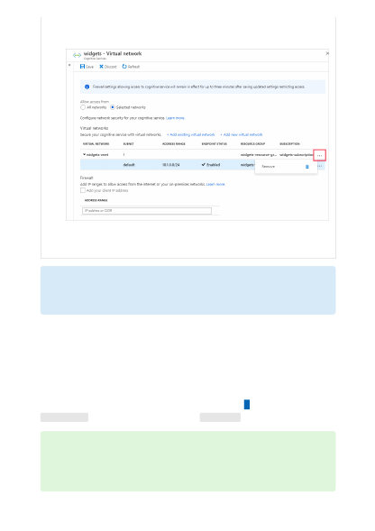
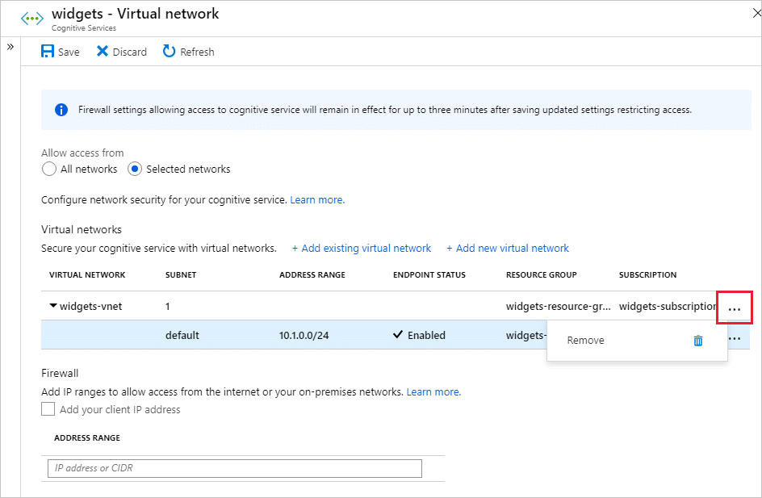

8. To remove a virtual network or subnet rule, select ... to open the context menu
for the virtual network or subnet, and select Remove.
9. Select Save to apply your changes.
You can configure Cognitive Services resources to allow access from specific public
internet IP address ranges. This configuration grants access to specific services and on-
premises networks, effectively blocking general internet traffic.
Provide allowed internet address ranges using CIDR notation in the form
16.17.18.0/24
or as individual IP addresses like 16.17.18.19.
）
Important
Be sure to set the default rule to deny, or network rules have no effect.
Grant access from an internet IP range
Tip
Small address ranges using "/31" or "/32" prefix sizes are not supported. These
ranges should be configured using individual IP address rules.